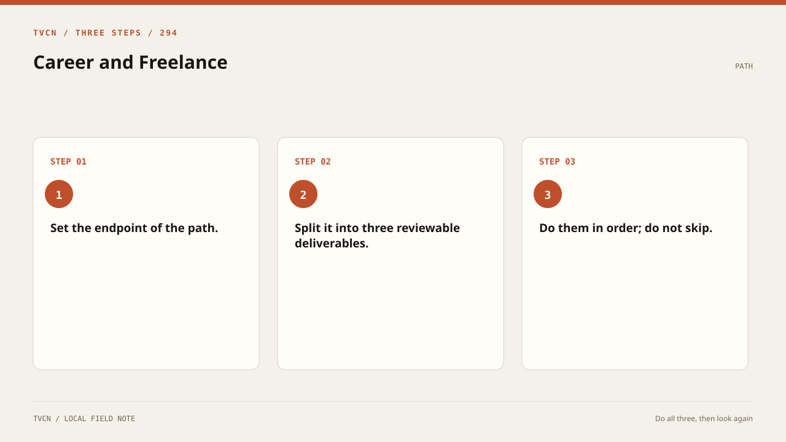

Before you start
Bring one to three films you can show, a real role description for each, one target client type, and your minimum acceptable quote.
How the path runs
Client work is not “I can do everything”; it is making one target client see which problem you solve in thirty seconds. Order: target, portfolio, showreel, quote, contract, delivery, repeat.
- Step 1: Target client: Not “brands” or “all companies.” Write “a local coffee-shop owner who needs three vertical videos a month and has no shoot time.” Then three problems: no script, no on-camera comfort, no ad plan. The narrower the target, the easier the portfolio. Output: One client profile and three problems.
- Step 2: Portfolio: A portfolio is not a pile; it is three proofs of “I solve this problem.” For each: client problem, your approach, your role, result. Do not include films you cannot show or roles you inflate. Output: Three pieces and three role notes.
- Step 3: Showreel: A showreel is proof, not a trailer. Put the strongest action in the first ten seconds, then group by skill: people, product, space, motion. Label camera/edit/grade per shot; do not claim all the credit. Output: A sixty-second showreel and a role sheet.
- Step 4: Quote: A quote is not one number; it shows where money goes. Days: how many people, how many days. Gear: rented or owned. Post: edit, grade, captions, mix. Licensing: scope, term, platform. Revisions are a number, not “reasonable revisions.” Output: A four-part quote and a revision count.
- Step 5: Contract: Six clauses at minimum: scope, rights/term, payment, revisions, delivery format, cancellation/postponement. Payment at thirty/forty/thirty or fifty/fifty; never shoot with zero deposit. Rights state where, how long, and whether the client can sublicense. Output: A six-clause contract skeleton.
- Step 6: Delivery: Deliver to the sheet: files, formats, captions, loudness, filenames, releases. The delivery email states what is included, excluded, and how many revisions were used. Archive after sign-off; new requests outside scope get a new quote, not free work. Output: Delivery pack, sign-off email, archive.
- Step 7: Repeat and referral: Seven days after delivery, ask three questions: what worked, what fell short, what the next film should solve. Do not just say “let me know.” Offer one concrete next plan: holiday, product launch, monthly package. Repeat work comes from remembering their next step, not a mass message. Output: One follow-up and one next plan.
Three exercises
- Exercise 1: Three-piece portfolio: Choose three pieces closest to the target; write problem, approach, role, result. Output: A one-page portfolio.
- Exercise 2: Four-part quote: Quote a real project across days, gear, post, and licensing, plus revisions. Output: A quote.
- Exercise 3: Six-clause contract: Write scope, rights, payment, revisions, delivery, cancellation; three lines each. Output: A one-page contract skeleton.
Three-step flow

Deliverables
- A client profile and three problems
- Three portfolio pieces with roles
- A sixty-second showreel
- A four-part quote
- A six-clause contract skeleton
- A delivery pack and sign-off email
- One follow-up and next plan
Where it goes wrong
- Selling “I can do everything”: clients remember the specific problem you solved, not range.
- Shooting with zero deposit: without payment milestones, the client can vanish.
- Unlimited free revisions: without a number, the relationship ends badly.
Next step
Next, return to path-distribution to update the portfolio with release data, or path-producing to turn quotes and schedules into reusable templates.
Image note. Covers, diagrams and step images on this page are editorial illustrations or structure diagrams, not photographs of a test performed here; they are not evidence of measured gear performance. Where an image is AI-assisted, the caption says so. Read the test conditions in the text before treating an image as proof.